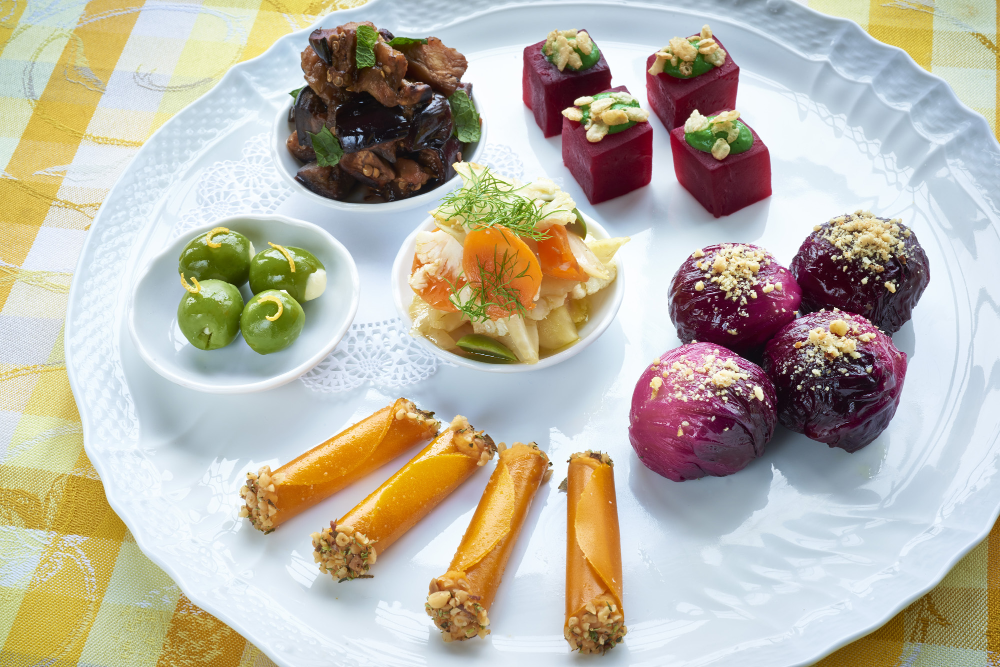
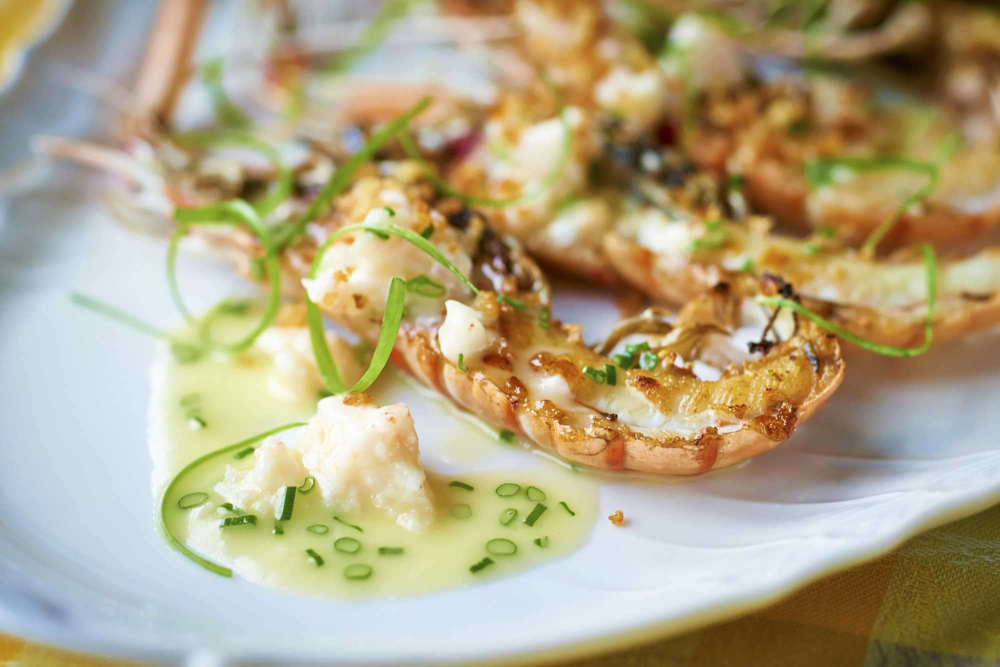
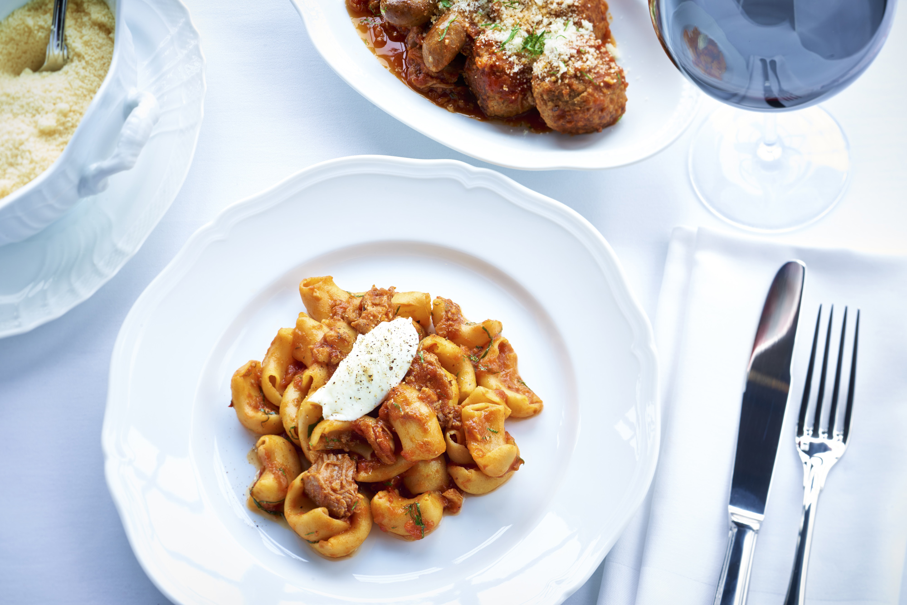
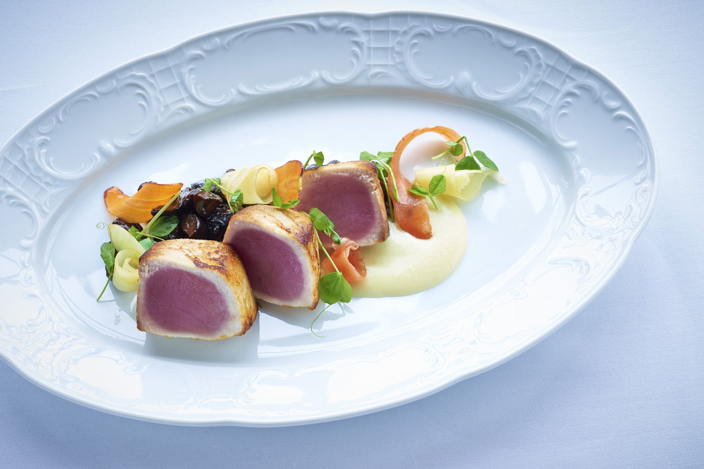
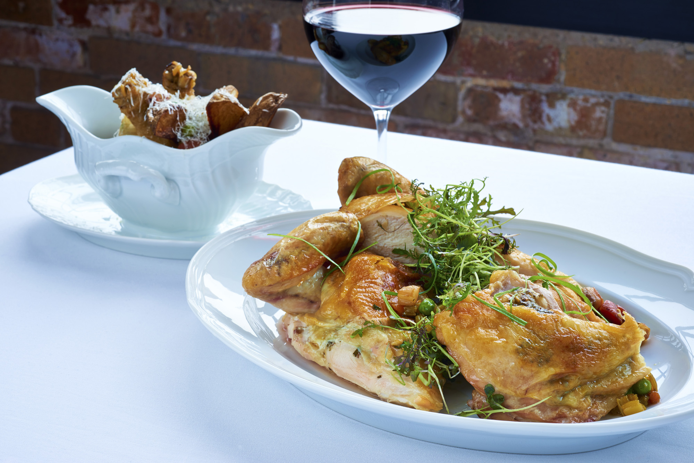
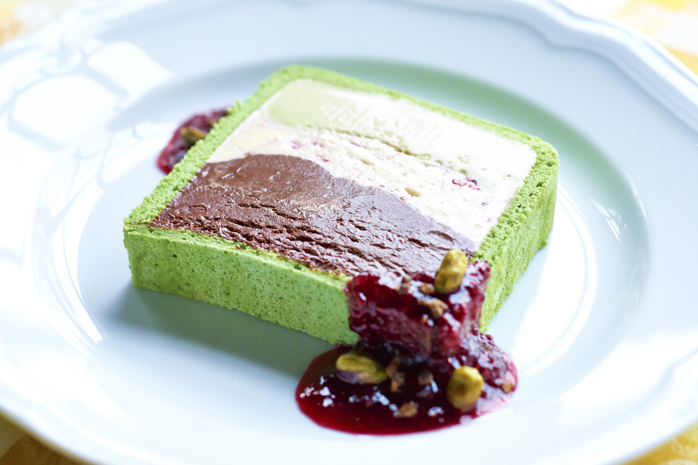

MQ的忠实读者及吃客们都应该已相当熟悉West Loop身为“吃货天堂”的事实。年初开幕的Formento’s又为兰道弗街增添一位生力军。这家意式餐厅是拥有业界超高评价的Balena及The Bristol背后集团的最新项目。
比起许多新餐厅，Formento’s的装修相较之下朴实许多，砖墙、沙发卡座，简单的四方桌，上方南瓜色的圆形吊灯释放着温暖、轻松的气氛。“记得小时候的每个周日晚上，我们69全家会聚集在祖母家，品尝祖传了好几代的传统意大利家常菜，”老板John Ross说，“我们希望Formento’s也能成为许多家庭回忆中的一部分。”环伺我们周遭的客人，的确有不少家庭带着一家老小来晚餐，其中一桌全家集体穿了芝加哥黑鹰队的球衣，想必是赶在球赛前来此饱餐一顿。
前菜部分我们品尝了烤挪威龙虾，片半的虾肉上布满各式香料、柠檬面包屑，一用叉子可以取起整条虾肉，肉质Q弹鲜美，蒜味奶油酱的香味满布口中，一下子就被扫地精光。
到意式餐厅当然不免俗地要品尝意面，我们选择了简单的伏特加茄汁意面，此道菜证明了即便是没有华丽食材的 家常料理，依然可以美味地令人发指。自家餐厅制作的宽管面劲道十足，吸取了酸甜的番茄酱汁，稍微融化的马斯卡 邦奶酪带来粘稠感，一入口竟有些许豆瓣酱的味道，是道极度满足的comfort food。
到“跳嘴肉”也是传统的意菜之一，这里以鹌鹑肉取代小牛肉，外层包裹上意式火腿，煎到表皮香脆，搭配榛果及烟熏花菜，味道丰富，鹌鹑肉口感弹嫩多汁，给了我们十足惊喜。
随后上桌的帕马森烤鸡分量之大令人瞠目结舌，建议多人分享或在你饥饿到可以吃下一头牛的状况再考虑点它，被片平的半鸡裹着面包屑，上头豪迈地淋上块状番茄浓酱，马苏里拉奶酪散布在一片红的酱汁上，宛如往四方蔓延的地图线。鸡肉滑嫩，看似浓郁的酱汁味道鲜美，牵丝的奶酪让所有食物美味加乘。
最后，不品尝甜点怎么能算是到过意式餐厅？这里的榛果巧克力蛋糕分量同样惊人，美味程度让人暂时能忘掉所有烦心事。如果你想领略意式家常菜，Formento’s就像你不曾有过的意大利祖母
烤挪威龙虾 Shrimp Scampi
伏特加茄汁意面 Rigatoni Alla Vodka
鹌鹑跳嘴肉 Quail Saltimbocca
帕马森烤鸡 Half Chicken Parmesan
榛果巧克力蛋糕 Formento’s Chocolate Cake
地址：925 W. Randolph St.
电话：312.690.7295
网址：http://www.formentos.com/#about
撰文／Chou, Yu-Jin